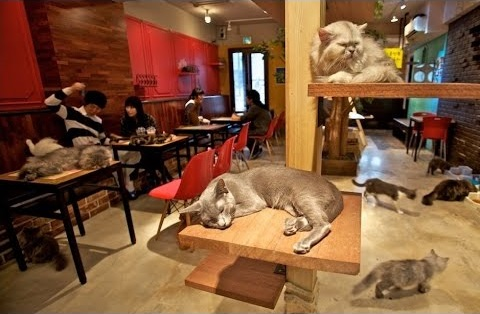
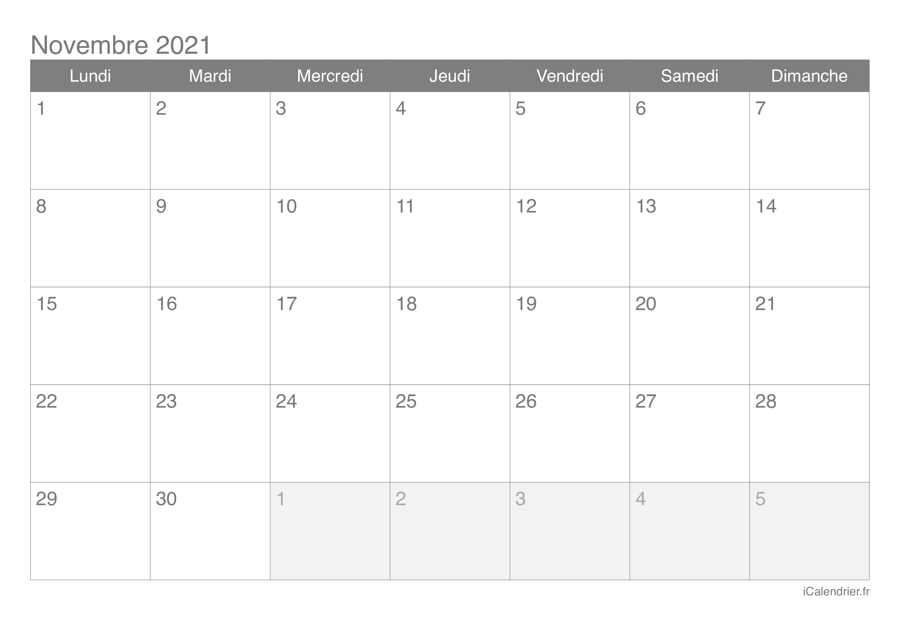

Le restaurant

Bienvenue sur le site de Cafélin. Nous sommes un bar/café à chat.
C'est en fait un café tout à fait classique, mais des chats se baladent dans l'établissment, et nos produits sont customisés dans un thème "félin".
Il est possible de louer un ou plusieurs chat(s) pour passer du temps avec lui/eux pendant que l'on déguste une boisson/gourmandise. C'est avant tout un lieu de détente et de bien être.
Nos horaires
Nous sommes ouverts du mardi au mercredi.
Notre bar reste ouvert de 11h30 à 12h.
Pour pouvoir accéder à notre établissment durant nos horaires d'ouverture, vous devez allez réserver sur notre page prévu à cet effet.
Notre établissment sera fermé durant nos période de congé, consulter le calendrier :
